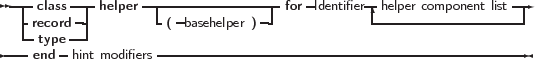

Class, record and type helpers can be used to add methods to an existing class, record or simple type, without making a derivation of the class or re-declaring the record.
For a record or a simple type, the type helper acts as if record or the simple type is a class, and methods are declared for it. Inside the methods, Self will refer to the value of the record or simple type.
For classes, the effect is like inserting a method in the method table of the class. If the helper declaration is in the current scope of the code, then the methods and properties of the helper can be used as if they were part of the class declaration for the class or record that the helper extends.
The syntax diagram for a class, record or type helper is presented below:
_________________________________________________________________________________________________________
Helper type

___________________________________________________________________
The diagram shows that a helper definition looks very much like a regular class definition. It simply declares some extra constructors, methods, properties and fields for a class: the class, record or simple type for which the helper is an extension is indicated after the for keyword.
Since an enumerator for a class is obtained through a regular method, class helpers can also be used to override the enumerators for the class.
As can be seen from the syntax diagram, it is possible to create descendants of helpers: the helpers can form a hierarchy of their own, allowing to override methods of a parent helper. They also have visibility specifiers, just like records and classes.
As in an instance of the class, the Self identifier in a method of a class helper refers to the class instance (not the helper instance). For a record, it refers to the record.
The following is a simple class helper for the TObject class, which provides an alternate version of the standard ToString method.
Remark: The helper modifier is only a modifier just after the class or record keywords. That means that the first member of a class or record cannot be named helper. A member of a class or record can be called helper, it just cannot be the first one, unless it is escaped with a &, as for all identifiers that match a keyword.
Remark: Support for type helpers requires the use of Delphi mode or the use of a typehelpers modeswitch in other modes:
Remark: Support for record helpers requires the use of Delphi mode or the use of a advancedrecords modeswitch in other modes: